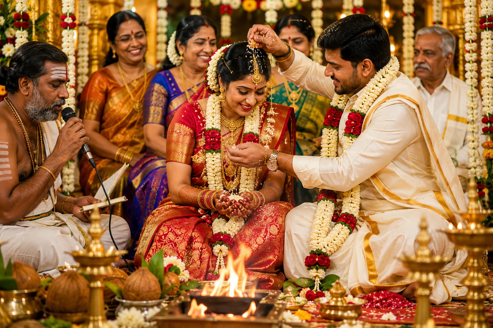
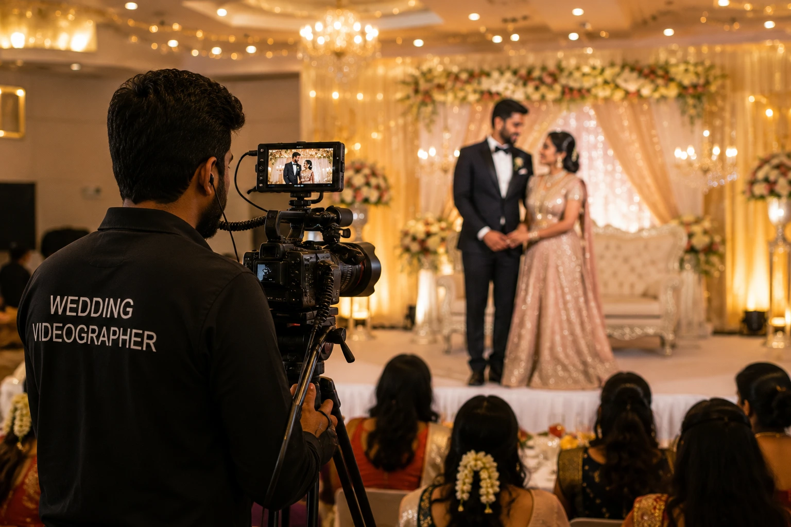

How to Find the Best Wedding Photographers Near Me with an Affordable Photographer and Videographer Package
Introduction
Your wedding day happens once. Every laugh, every tear, every stolen glance across the mandap — these are moments you cannot recreate. The right wedding photographer and videographer do not just document what happened. They preserve how it felt. And yet, for most couples planning a wedding in India, finding the right team feels overwhelming: too many options, too much price variation, and no clear way to know whether you are getting quality or just a good sales pitch.
This guide is for every couple searching for the best wedding photographers near me — whether you are planning a wedding in Madurai, Tamil Nadu, or anywhere across South India. We walk you through what to look for, what to ask, and what a fair affordable wedding photography package should actually include.
Why Wedding Photography and Videography Are Not the Same Investment
Most couples approach wedding photography and videography as a single budget line item. In reality, they are two distinct crafts. A video photographer who handles both photo and video sounds convenient but rarely delivers excellence in both. Photography freezes a single moment in perfect composition. Videography captures movement, sound, emotion, and atmosphere over time. The lighting rigs, camera systems, and editing workflows for each are fundamentally different.
That said, booking a videographer package near me alongside your photographer does not have to break the budget. Many studios — including those based in Madurai and serving weddings across Tamil Nadu — offer combined photographer package near me deals that bundle both disciplines into a single, coordinated production at a more accessible price point than booking two separate vendors.
What Makes a Wedding Photographer Truly the Best
When couples search for the best wedding photographers near me, they typically start with Google results, Instagram feeds, and word-of-mouth. All three are valid starting points — but none of them alone tell you what you actually need to know. Here is what separates a truly exceptional wedding photographer:
Consistency Across the Full Day
Ask to see a full gallery from a real wedding — not just the ten best shots. Consistency across varying lighting conditions is the mark of a professional.
Style That Matches Your Wedding
Study their portfolio for emotional tone, not just technical quality. The right photographer's style should feel like a natural fit for your specific celebration.
Local Ritual Experience
A Madurai photographer who has shot Tamil weddings for years knows the rituals, pacing, and emotional rhythms in a way a photographer from another city cannot.
Pre-Wedding Communication
The best photographers meet with couples before the day to understand personalities, family dynamics, and the moments that matter most — not just to confirm arrival time.

What to Look for in an Affordable Wedding Photography Package
Affordable wedding photography does not mean cheap wedding photography. It means getting genuine value — the right coverage, the right quality, and the right deliverables for the price you pay. Here is what a well-structured package should include:
- Coverage hours: A standard full-day package should cover a minimum of 8 to 10 hours, from getting-ready shots through the ceremony and into the reception. Confirm what time coverage begins and whether overtime is available and at what rate.
- Number of photographers: One photographer cannot be in two places at once. For medium to large weddings, a lead photographer plus at least one associate ensures simultaneous coverage of both getting-ready suites and wider event coverage throughout.
- Videography options: A quality videographer package near me should deliver at minimum a highlight film (5 to 8 minutes) with professional audio capture — directional microphones on the officiant and couple, not just camera audio.
- Edited image delivery: Confirm how many edited images are included, the editing style, and the turnaround time. A package promising 1,500 edited images in one week and one promising 300 in eight weeks are telling you very different things about post-production care.
- Delivery format: Digital downloads? Prints? A physical album? Confirm whether an album is included or a paid add-on, and what the album specifications are.
- Usage rights: Confirm full personal use rights — the ability to print, share, and use your images without restriction — are included in the package.
10 Questions to Ask Every Photographer Before Booking
When comparing any photographer package near me options, ask every candidate these questions before making a decision:
- Can I see a full gallery from a recent wedding — not just your portfolio highlights?
- Will you personally be the primary photographer on our wedding day, or will you send an associate?
- How many weddings do you shoot per weekend?
- What is your backup plan if you have an emergency on our wedding day?
- What equipment do you shoot with, and do you carry backup camera bodies?
- How do you handle low-light conditions — indoor ceremonies, evening receptions, dancing?
- What is your post-processing style, and can I see examples from a similar venue?
- What is your full payment schedule and cancellation policy?
- Is a second photographer or videographer included, and who specifically will that person be?
- What is the turnaround time for our full edited gallery?
A photographer who answers these with specificity and confidence is one who has done this professionally and cares about getting it right. Vague or evasive answers to any of these are a warning sign.
Why Madurai Couples Have a Distinct Advantage
Couples planning weddings in Madurai have access to a growing community of talented professional photographers and videographers who understand the city's unique wedding culture — the scale of Tamil weddings, the importance of specific rituals, the dramatic light of Madurai's heritage venues, and the energy of the city's celebration style.
A local Madurai photographer brings existing relationships with popular wedding venues, allowing them to scout locations in advance, know where the best light falls at different times of day, and anticipate logistical challenges before they become problems on the wedding day. They understand that the nalangu, the thali tying, and the family group portraits each require different pacing and different photographic approaches.
For couples searching for the best wedding photographers near me in Madurai and across Tamil Nadu, working with a team embedded in the local wedding industry is not just a convenience — it is a quality advantage.

How to Compare Photographer and Videographer Packages Fairly
When comparing affordable wedding photography packages across multiple studios, do not compare headline price alone. Compare these five factors:
Total Hours
- Confirm start and end time
- Ask about overtime rates
- 8–10 hours is a full-day minimum
Team Size
- Lead photographer + associate?
- Dedicated videographer included?
- Who specifically will be there?
Deliverables
- Edited image count and timeline
- Highlight film duration and audio
- Album included or add-on?
A package at ₹40,000 covering 6 hours is not cheaper than ₹55,000 covering 12 hours with two professionals — it is incomplete coverage at a similar effective rate. Always compare equivalent configurations, not just the total number at the bottom.
The Difference a Professional Video Photographer Makes
For couples on the fence about adding video to their coverage, one consideration usually settles the question: photography cannot capture sound. The sound of your partner's voice as they say their vows. The shouts of joy when the thali is tied. The music as you walk into your reception. The laughter during the nalangu. A video photographer — or ideally a dedicated videographer — captures the full sensory dimension of your wedding in a way that even the finest still photography cannot.
A professionally edited wedding highlight film, set to music and delivered in a cinematic format, is often the piece of wedding content couples return to most in the years after. It is also the content most shared with relatives who could not attend, and the piece most likely to be treasured by the couple's children one day. Adding a videographer package near me to your wedding coverage is not an indulgence — it is a different kind of memory preservation that photography alone simply cannot provide.
Conclusion
Finding the best wedding photographers near me is not about finding the most famous name or the lowest price. It is about finding the team whose visual style, communication approach, and professional experience align with the specific emotional reality of your wedding day. For couples in Madurai and across Tamil Nadu, the right photographer package near me — bundled with a quality videographer package near me — delivers a comprehensive record of one of the most important days of your life, at a price point that reflects genuine value.
Start with a full portfolio review. Ask the right questions. Confirm every detail in writing. And choose a team you trust not just with your camera roll, but with your memories.
At The PhD Ads, we offer affordable wedding photography and videography packages across Madurai and Tamil Nadu — from intimate ceremonies to large-scale celebrations, with a dedicated team built for the full emotional range of a Tamil wedding.
Key Topics
Planning Your Wedding in Madurai or Tamil Nadu?
At The PhD Ads, we offer professional wedding photography and videography packages built for Tamil weddings — from candid ceremony coverage to cinematic highlight films, with a dedicated team that understands every ritual, every moment, and every emotion of your day.
Email: team@e2o.in